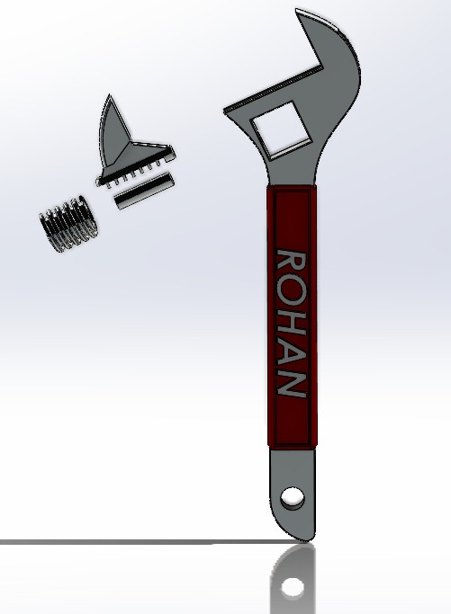
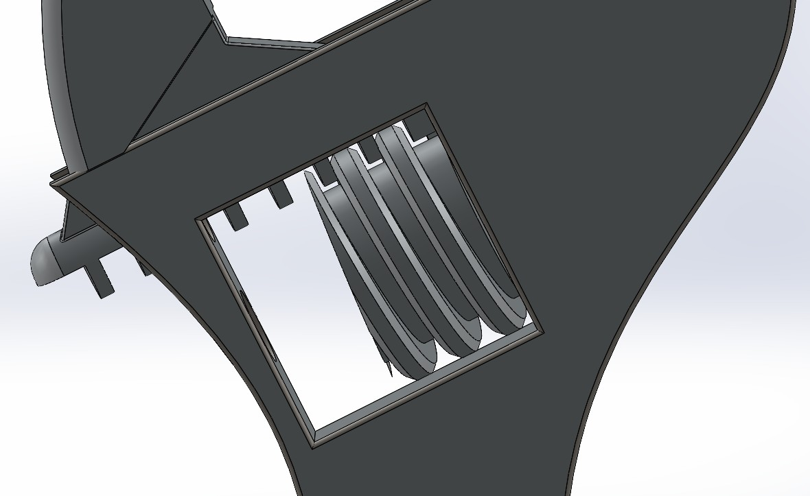
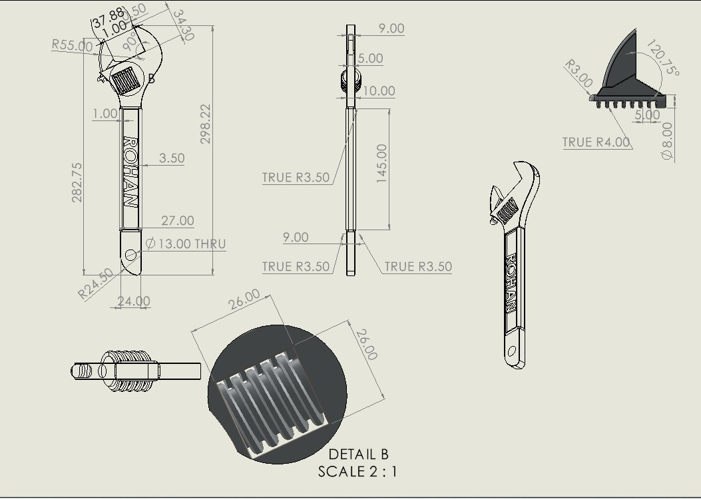
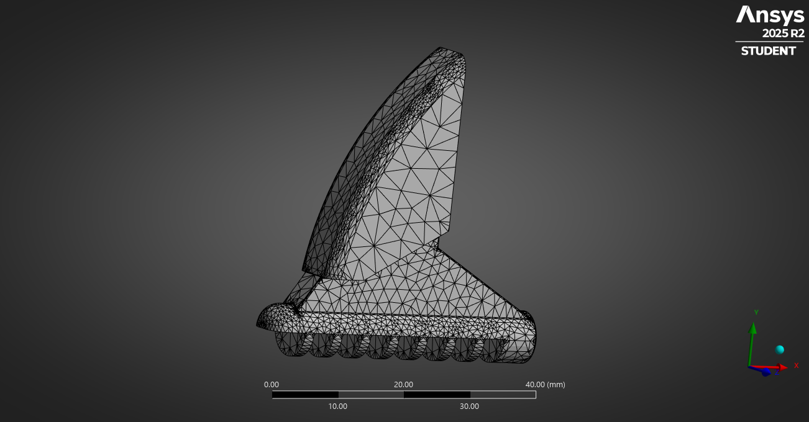
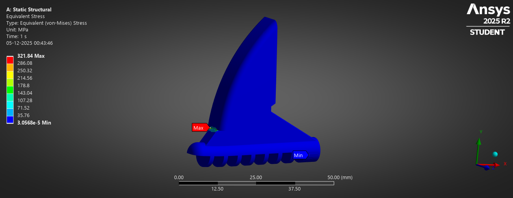

Exploded Assembly View
Exploded configuration showing the handle, fixed jaw, sliding jaw, worm screw and rack insert. The view makes the assembly sequence and the way each part locates into the wrench head easy to understand.
An adjustable wrench is a common hand tool used to grip and tighten different sizes of nuts and bolts. A sliding jaw driven by a worm screw allows the opening to be adjusted, so the same tool can be used on a range of fastener sizes.
In this model the handle, fixed jaw, sliding jaw and worm screw are designed to reflect a real manufactured wrench, with clearance for smooth motion and tooth geometry that engages reliably under load.

Adjustable wrench assembly modelled, detailed and animated in SolidWorks.
This project focuses on building a fully constrained wrench mechanism, setting up mates for the sliding jaw and worm screw, and documenting the design through drawing views and a short motion study. The assembly was created and validated entirely in SolidWorks.

Exploded configuration showing the handle, fixed jaw, sliding jaw, worm screw and rack insert. The view makes the assembly sequence and the way each part locates into the wrench head easy to understand.

Sectioned view through the wrench head focusing on the worm screw and sliding jaw engagement. It shows how the rack teeth, screw profile and side guides interact to control jaw position while maintaining alignment under tightening loads.

Detail B of the jaw rack teeth from the drawing, scaled 2:1. Dimensioning the tooth spacing, profile and radii demonstrates control of the sliding interface that allows the jaw to move smoothly yet resist backlash when torque is applied to the handle.
Motion study showing the sliding jaw opening and closing through the worm screw rotation, with mates and travel limits applied to represent the functional range of the wrench.
The worm screw is driven through a rotary input while the sliding jaw is constrained using appropriate mates in the slot. The animation visualises the adjustment mechanism and checks clearances at the fully open and fully closed settings.
A static structural study was carried out on the moving jaw of the adjustable wrench to understand how it behaves under a hand-tightening load. The jaw is modelled in ANSYS using the default Structural Steel material and a 100 N lateral force applied on the gripping face.



The analysis shows that the jaw behaves as a stiff cantilever, with deformation well below a tenth of a millimetre for a 100 N hand-tightening load. The von-Mises stress concentrates at the fillet, which is typical for this type of geometry. In a production design, this result would be used to either:
This FEA study demonstrates my workflow for setting up boundary conditions, generating an appropriate mesh and turning raw results into design decisions.